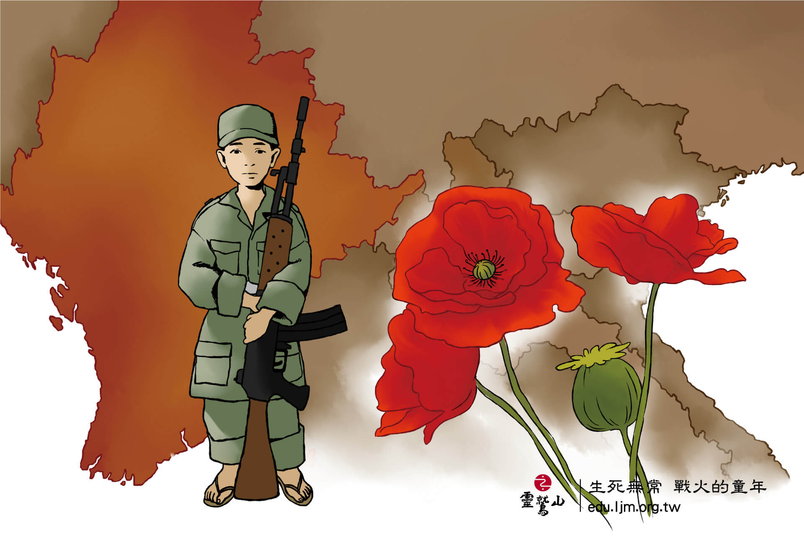
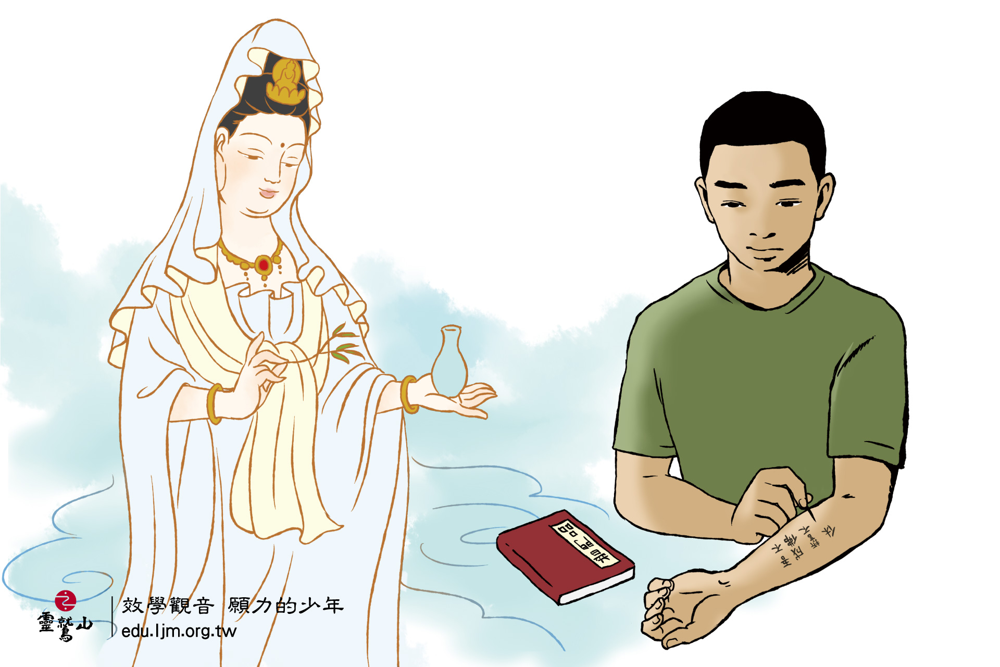
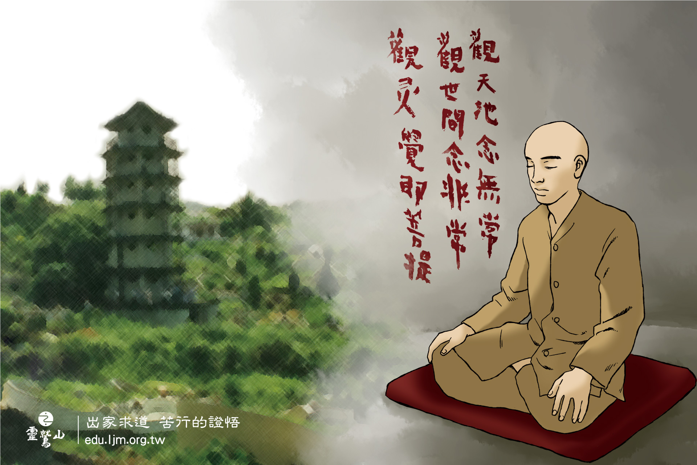
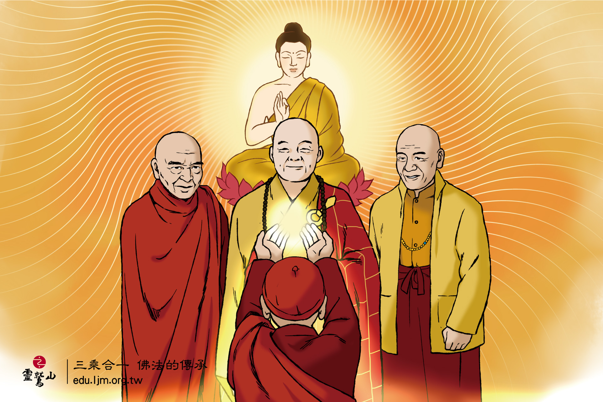
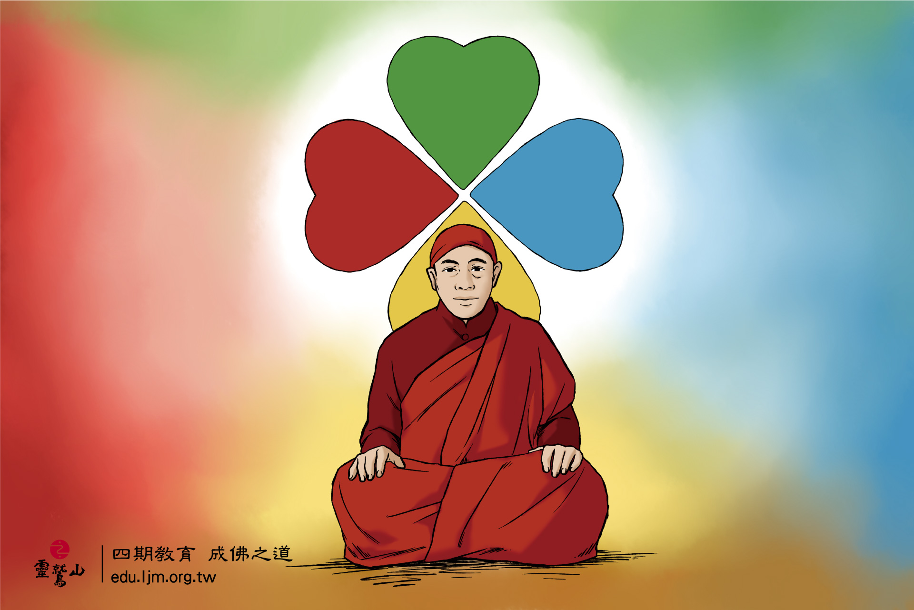

來自2500年後的智慧 生死無常 戰火的童年
2500多年後，有一位覺者誕生在緬甸和雲南邊界的小村莊，在那戰亂的年代，他4歲時，就因父亡母離而成為孤兒。
9歲加入游擊隊，在槍林彈雨的叢林野戰中，體會到了生死的無常，當時的槍都比這個小兵還要高。他總是想著:「如何可以沒有戰爭?」
9歲加入游擊隊，在槍林彈雨的叢林野戰中，體會到了生死的無常，當時的槍都比這個小兵還要高。他總是想著:「如何可以沒有戰爭?」

效學觀音 願力的少年
15歲時，一位軍醫送他一本經典《普門品》，當他聽聞到觀世音菩薩的聖號就淚流不止，決心要學習觀世音菩薩的修行和慈悲的願力。
這個少年拿針在手上和腹部刺下他的誓言:「悟性報觀音」、「吾不成佛誓不休」、「真如度眾生」，彷彿當年佛陀的修行誓言「如不證悟、絕不下座」，這樣堅定的願力，也影響了他的一生。
這個少年拿針在手上和腹部刺下他的誓言:「悟性報觀音」、「吾不成佛誓不休」、「真如度眾生」，彷彿當年佛陀的修行誓言「如不證悟、絕不下座」，這樣堅定的願力，也影響了他的一生。

出家求道 苦行的證悟
歷經各種的社會工作，他從未忘記觀世音菩薩的修行，堅持吃素和打坐。
25歲時，面對修行好友的病逝，他決心出家，尋找如何了脫生死的修行之道。
佛陀座下苦行第一的迦葉尊者，是他效法的榜樣，開始了10年的墓地頭陀行與2年的斷食閉關，歷經12年的苦行，他發現了--「自己的生命和眾生的生命是分不開的」。出關後，如同佛陀證悟後的弘法利生菩薩行，他走向人群，建設修行道場，分享覺悟的生命與佛法的智慧。這一位覺者就是靈鷲山開山大和尚 心道法師。
25歲時，面對修行好友的病逝，他決心出家，尋找如何了脫生死的修行之道。
佛陀座下苦行第一的迦葉尊者，是他效法的榜樣，開始了10年的墓地頭陀行與2年的斷食閉關，歷經12年的苦行，他發現了--「自己的生命和眾生的生命是分不開的」。出關後，如同佛陀證悟後的弘法利生菩薩行，他走向人群，建設修行道場，分享覺悟的生命與佛法的智慧。這一位覺者就是靈鷲山開山大和尚 心道法師。

三乘合一 佛法的傳承
心道法師身兼三乘法脈的傳承，以大乘傳承本煥老和尚與星雲大師座下納受臨濟宗法脈，在緬甸國師親授南傳三壇大戒與南傳上座部瑪哈喜禪法傳承，藏傳傳承寧瑪龍欽寧替大寶伏藏為專修法脈，弘法更是以觀音菩薩大悲法門為接引。
心道法師圓滿三乘法脈的傳承，並以「三乘合一」的教育回歸佛陀的本願，弘揚三乘法教為願力，願眾生具諸佛法，早成佛道。
心道法師圓滿三乘法脈的傳承，並以「三乘合一」的教育回歸佛陀的本願，弘揚三乘法教為願力，願眾生具諸佛法，早成佛道。

四期教育 成佛之道
從戰火出生體會了生命的苦難與無常，以塚間苦行及斷食閉關體證生死，以三乘法脈傳承佛陀圓滿教育為本願，心道法師的整個修行與弘法歷程，映現了佛教陀苦行到弘化呈現的完整生命教育。
1988年，以其畢生實修體證，結合佛陀三藏十二部法教，開展出阿含、般若、法華與華嚴的「四期教育」，心道法師說:「四期教育是為了實踐用的，並不是為了拿文憑、追求學問的那種教育方式，而是一切眾生在輪迴中，都會必然歷驗這樣的生命學習，而致圓滿成就。」，這不是一生一世的學習，而是生生世世的成佛之道。
1988年，以其畢生實修體證，結合佛陀三藏十二部法教，開展出阿含、般若、法華與華嚴的「四期教育」，心道法師說:「四期教育是為了實踐用的，並不是為了拿文憑、追求學問的那種教育方式，而是一切眾生在輪迴中，都會必然歷驗這樣的生命學習，而致圓滿成就。」，這不是一生一世的學習，而是生生世世的成佛之道。


{kind=link}
{kind=link}